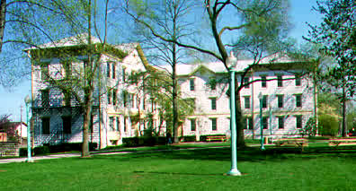

Forgotten Ohio: Baldwin-Wallace College
Founded by Western Reserve settlers from Connecticut along Baldwin Creek in Berea, Baldwin-Wallace has been admitting students of all races and genders since 1845. It's a small college in the Cleveland area with a long history, and more than a couple of ghost stories. And here they are, for your reading enjoyment.
Kohler Hall

Kohler wasn't part of B-W until 1913. Prior to that it, along with Marting Hall, Dietsch Hall, and the Chapel, made up German Wallace, which merged with Baldwin University to form the current campus. Kohler Hall was built in the 1870s as the Methodist Children's Home. It's said that it was used variously as a hospital and an insane asylum. A tunnel exists beneath Seminary Street between the basement morgue and the college Chapel, walled off on the Chapel end and locked tight in the old morgue. Today Kohler is known as the "freak building," partially because it houses art majors, but also because of the freaky happenings inside its walls. A mysterious blue haze is the most frequently encountered manifestation, one which only appears in the old wing of the building. It presses down on people while they're in bed and appears in the halls. A ghost also sometimes tugs blankets off sleeping residents.
Lang Hall
Emma Lang, the woman after whom this residence hall is named, is seen walking the halls and heard rattling her keys. Students who have seen her recognize her from a picture that hangs above the mantel in the lobby. Another story says a conservatory student on the fourth floor killed herself in her closet. Her screams echo through the building. She may also be the reason that girls sometimes feel somebody the heavy, imposing pressure of an invisible someone sitting on their lap in the restroom.
BW.edu
Ohio's Haunted Colleges
Back
{kind=link}
{kind=link}